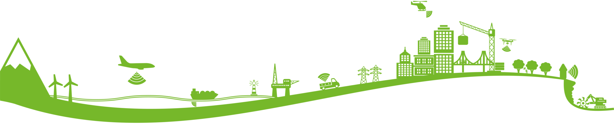

Parceque nous croyons à l'anvergure de la cause environnementale et nous soutenons la transition du continent vers le développement durable.
"Ce projet de cartographie des risques climatique s'inscrit dans le cadre des projets académiques menés au sein du département des sciences géomatiques et ingénierie topographique à l'IAV Hassan II.
Ce travail combine le potantiel de la cartographie et le pouvoir de la donnée en faveur de l'environnement."
Risques Climatiques au Maroc et au Nord d'Afrique
Maroc
Le Maroc dispose d’une façade maritime importante, et la majorité de sa superficie est située en zone montagneuse. Si les trois quarts du pays sont arides à semi-arides, le pays réunit sur son territoire toutes les formes du climat méditerranéen. La diversité des milieux entraine une biodiversité importante.
Le Maroc a adopté dans sa stratégie de développement le concept de développement durable qui favorise l'équilibre entre les dimensions environnementales, économiques et sociales, avec pour objectifs l'amélioration du cadre de vie des citoyens, le renforcement de la gestion durable des ressources naturelles et la promotion des activités économiques respectueuses de l'environement.